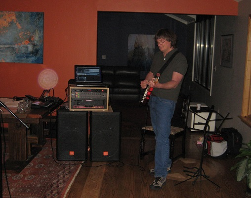

|
|
13155 Falcon Point Place
Truckee, CA 96161
Cell: 925-765-2883
|
|

|
|
| |
Scott Stompbox Prototype
This stompbox gives a musician
MIDI
foot control of audio effects while performing.
This stompbox is particulaly well suited for use with audio software such as
Reaper,
ProTools,
CakeWalk,and
Cubase.
With this stompbox, you can also control a Digital Audio Workstation
(DAW)
equipment such as a keyboards and/or synthesizers. For example, with the press of a switch, you can set the patch and effects
on any DAW. Lastly, this stompbox can be used to control lighting functions using
Midi Show Control.
Press a footswitch to change any lighting scene setting.
To assign switch Midi functions, download (registered users only) the Windows based stompbox control program, connect the stompbox to
your PC using a USB cable, launch the program, and assign 'Program Change', 'Continuous Control' and/or 'System Exclusive' commands
to the individual switches. The stompbox provides multiple configuration 'maps' allowing the user to toggle between multiple groups
of switch functions in real time.
A typical configuration is to use the stompbox to control Reaper playback of rhythm and bass tracks when developing a lead or jamming.
To minimize disruption of the creative process, jumping between verse markers, chorus markers, and bridge markers needs to be seamless.
A particularly useful configuration is set the bottom row of 6 switches to jump between chorus, verse, and bridge markers in an audio project,
with the next row of 6 switches used to enable / disable tracks during playback. For example, you may want to work with different rhythm tracks
while working out a lead. Just press the stompbox switch to toggle between different rhythm tracks. Reaper has a particularly nice feature called
'smooth seeking' that advances to the next marker/section on completion of the current marker/section.
The top row of 4 switches is used to control start/stop/record, tempo increase/decrease, loop on/off, and toggle between midi maps.
Since all of the switches are independently configurable, you can setup the stompbox to best suit your individual needs.
I am confident that this stompbox's performance competes well with any commercially available stompbox.
One sad fact I learned building this stompbox prototype is; the raw materials (alone) that are necessary to build this stompbox are more
expensive than a fully assembled, commercial unit from many stompbox providers.
This fact alone will liekly prevent me from mass producing this stompbox,
but it does provide useful information for other DIY guitar accessory
|
| |
Scott MidiControl Software for Windows 7 (and above)
Scott MidiControl is a simple Windows program used to control midi devices from your PC.
MidiControl controls midi devices using 'program change', 'continuous control', or 'system exclusive' messages.
MidiControl can not be used to play midi files.
A typical musician likely has many midi devices such as keyboards, guitar effects, drum machines, voice processors, and many more.
All of these devices can be controlled and synchronized using MidiControl.
To start, connect all of your midi devices to your computer with a USB hub (like a
MidiSport 4x4
). Next, download MidiControl, install Scott MidiControl (FREE!), and configure MidiControl.
You now have a simple means to control all of your Midi devices from your PC!
New features will be added as Scott MidiControl evolves. If you have a particular feature you would like added, please
email us.
|
| |
MP3 Preamplifier
I built this stereo mp3 preamplifier to boost my relatively underpowered mp3 play's volume to an acceptable level while riding my motorcycle
(now I know what you are thinking and it is not true! I do not drive a loud motorcycle with rackus music blasting!). The amplier boosts audio
output of an mp3 player by a factor of 10. Sound quality is good (better than mp3 quality considering mp3 quality is generally low).
Power is provided from a 9V power source or 9 volt battery. A 9 volt batter will typically last around 100 hours during playback.
The mp3 preamplifier is connected to a 3.5mm male-to-male cable/plug as shown below. The headphone or audio connector is connected to the 'audio out'
connector on the mp3 player.
The JFET-input operational amplifiers in the TL07x series are similar to the TL08x series, with low input
bias and offset currents and fast slewrate.
The low harmonic distortion and low noise make the TL07x series ideally suited for high-fidelity and audio
preamplifierapplications.
Each amplifier features JFETinputs(for high input impedance)coupled with bipolar output stages integrated on a single monolithic chip.
|
Texas Instruments TL07xFeatures:
- Low Power Consumption
- Wide Common-Mode and Differential Voltage Range
- Low Input Bias and Offset Currents
- Output Short-Circuit Protection
- Low Total Harmonic Distortion : 0.003%Typ
- Low Noise
- High Input Impedance
- Internal Frequency Compensation
- High Slew Rate:13V/mico second typical

|

|
|
| |
MIDI Interfaces
This adapter provides the hardware interface necessary to implement the MIDI asynchronous serial communication protocol on an Arduino Due microcontroller (or any other 3.3 volt microcontroller).
With this adapter, you can send midi patch/program change commands, continuous control commands, or play note (note on / off) commands from your ardunino microcontroller to your music equiplemnt.
Additionally, you can receive midi commands and data from your music equipment and program your Arduino to respond accordingly.
Start by connecting the Arduino serial IO (TX/RX) pins to the Midi adapter TX/RX pins. Then use the Midi cable to connect the Midi adapter to your Midi enabled music device.
(Note: this board has 3.3 volt to 5 volt level shifters for compatibility with 3.3 volt TX and RX microcontroller pins)
Both MIDI-IN and MIDI-OUT connections are provided. MIDI THRU is currently not provided.
The MIDI-IN port is opto-isolated to prevent ground loops.
|

|
Midi Cable

|
|

|
|
| |
Midi Program Launcher
Have you ever wanted to launch an application on your PC by pushing a button on you midi floorboard controller or maybe by pressing a note on your keyboard?
This is the idea behind the Midi Program Launcher.
The first incarnation of this product was used to launch an MP3 file in Windows Media Player.
The program has since been generalized to launch any program passing any file name as a program parameter.
For example, by pressing a button, you can launch Reaper and load a Reaper project.
Press another button on your floorboard controller to start or stop the reaper project.
The Midi Program Launcher installer will install two items.
The first items is a Windows ‘service’ that listens for midi commands and takes the appropriate action when received.
The Windows service continually runs listening for midi event and performing the appropriate action.
The second item is a Windows C# maintenance program that is used to define midi actions taken when a midi event is received.
|
xxxxxxxxxxxxxxxxxxxxxxxxxxxxxxxxxxxxxxxxxxxxxxxx
xxxxxxxxxxxxxxxxxxxxxxxxxxxxxxxxxxxxxxxxxxxxxxxx
xxxxxxxxxxxxxxxxxxxxxxxxxxxxxxxxxxxxxxxxxxxxxxxx
xxxxxxxxxxxxxxxxxxxxxxxxxxxxxxxxxxxxxxxxxxxxxxxx
|

|
|
| |
Reaper Custom Action List
Reaper 'Action Lists' commands:
1: Transport commands: start, stop, pause, rewind, fast foward, record arm. start/stop recording.
2: Marker commands: set markers in your Repaer project and jump to a marker via a switch press.
3: Looping commands: press a foot switch set loop begin points and loop endpoints.
4: Speed commands: press a foot switch to increase or decrease the tempo of a loop.
5: Track commands: press a foot switch to scro/l through tracks and arm/disarm tracks for recording .
|
xxxxxxxxxxxxxxxxxxxxxxxxxxxxxxxxxxxxxxxxxxxxxxxx
xxxxxxxxxxxxxxxxxxxxxxxxxxxxxxxxxxxxxxxxxxxxxxxx
xxxxxxxxxxxxxxxxxxxxxxxxxxxxxxxxxxxxxxxxxxxxxxxx
xxxxxxxxxxxxxxxxxxxxxxxxxxxxxxxxxxxxxxxxxxxxxxxx
|
|
|
| |
Custom 19" Rack Enclosures
|
These racks are 3/4 in plywood with a cherry veneer. They are much stronger than the typical racks made of 5/8" fiberboard laminate.
All racks have mitred edges and beveled front edges. Large racks have re-enforced interior joints.
These racks provide a very economical yet attractive means for rack mounting audio gear in your home studio or performance venue.
Assembly hardware and 11-gauge steel rack rails are provided.
Glass doors are optional (not shown).
Veneer has not been stained.
These racks are particularly deep to accomodate a
rack mounted pc (see image below)
for audio recording.
The extra depth provides ample protection to usb devices (such as network adapters and wireless network adapters) connected to usb ports
on the front of the PC and display, audio, and other interface connections on the rear of the pc.
Features:
- Rack Spaces: 12U, where U=1.75" (custom sizes available)
- Build Material 3/4" plywood with cherry veneer
- Color/Finish unstained cherry
- Height 19"
- Depth 20"
- Width 20.5"
- Weight 16 lbs.
ARK IPC-3U380D Black 3U Rackmount Server Case 3 External 5.25 Drive Bays

|

|
|
| |
Pete & Larry 'tearing it up'
|

|

|
|
| |
|